便签放在手边，
不用时收进屏幕边缘
PinNote 是 macOS 和 Windows 上的本地 Markdown 桌面便签。需要时把它放在手边，不用时收进屏幕边缘，在便签中心整理，也可以连接你授权的 AI 工具。
macOS（Apple Silicon 和 Intel）· Windows x64 · 免费开源
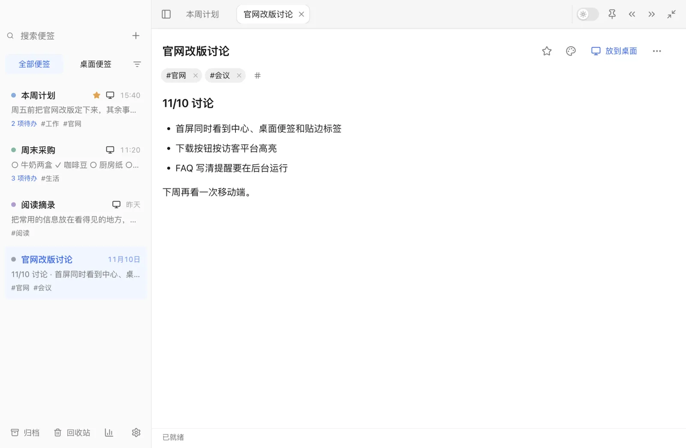
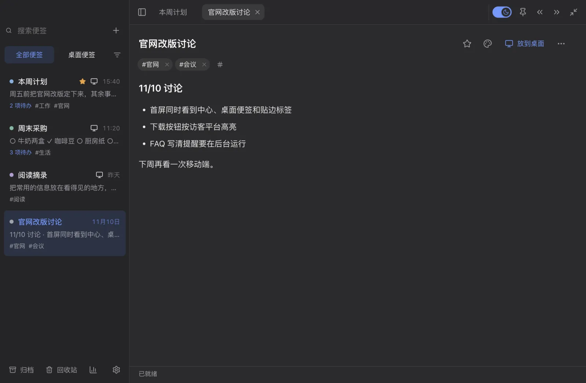
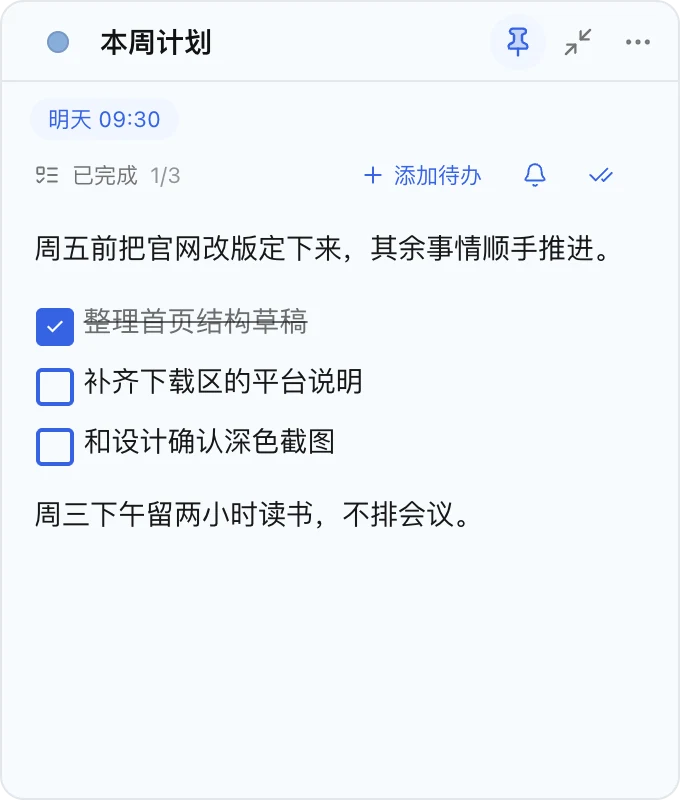
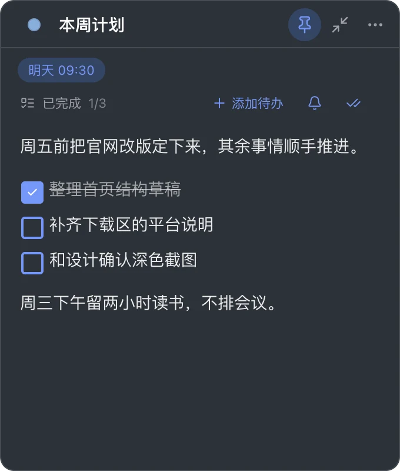
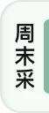
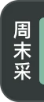
一张便签，从中心到屏幕边缘
同一张「本周计划」：在中心写，放到桌面，收成胶囊或贴边标签，悬停看一眼，点开继续写，最后收回中心。可以拖动便签，也可以用按钮和键盘。
便签中心也能收起
中心标题栏右上角有三个按钮：收起到左侧边缘、收起到右侧边缘、收起为小条。
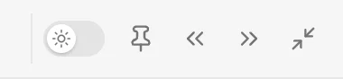
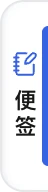
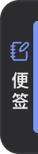
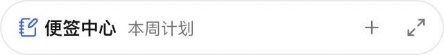
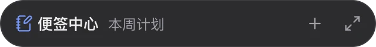
- 边缘把手：点一下恢复到记住的尺寸和位置；沿边上下拖动可以换位置；向内明显拖出，窗口直接出现在指针下。
- 小条：一条紧凑横条，显示当前便签标题，可以新建便签或展开。
- 把中心窗口拖到屏幕左右边缘松手，也会收成把手。
仅 macOS 收起时窗口缩小着飞进把手或小条，恢复时再放大回来。Windows 和开启「减少动态」时直接切换，没有这段动画。
在便签中心里整理
列表、工作标签页、编辑器和工具栏都在一个窗口里。试着搜索「官网」，勾掉一项待办，或者用筛选只看有提醒的便签。
- 工作标签页
- 顶部的标签页是正在用的便签，关掉只是不再打开，便签还在。
- 标签
- 标题下的 #工作、#官网 是内容标签，用来筛选，最多 12 个。
- 提醒
- 每张便签一个一次性提醒，不是每项待办各一个。
连接你授权的 AI 工具
PinNote 带一个本地 MCP 服务。默认关闭；启用后默认只读，修改便签需要你单独打开写入权限。便签留在本机，但 AI 工具读到的内容，会交给你配置的那个客户端处理。
读写范围：普通便签（归档和回收站不在范围内）
找回旧内容，带走全部便签
便签只存在这台电脑上，不做云同步。下面五样东西各管一件事，别把它们混在一起。
- 归档
- 收起用完但还想留着的便签。会被导出、计入统计，提醒暂停，随时恢复。
- 回收站
- 删除前的缓冲。默认 30 天后自动永久删除，可以改成 60 天、90 天或永不。自动清空在每日备份之后进行。
- 历史版本
- 停下 10 分钟以上再继续编辑时，保留之前的内容。每张便签最多 20 个版本；恢复前，当前内容也会存成一个版本。
- 自动备份
- 应用运行时每天备份一次全部便签（内容没变就不备份），保留最近 14 份。恢复前先把当前内容另存一份，再替换并重启。
- 导出 Markdown
- 导出一张，或导出全部：新建一个文件夹，每张便签一个 .md 文件，归档的放在「归档」子文件夹，回收站不导出。
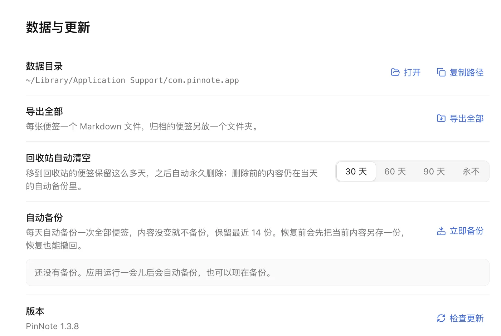
记录概览
中心左下角的图表按钮打开它：便签数、近 7 天编辑、本月完成的待办、连续记录天数，以及最近 20 周的热力图。它只统计这台电脑上的编辑、新建和完成次数，不是评分，也不上传。
点一个格子，看那天动过哪些便签。下面是示例数据，和上面几张示例便签对应。
浅色、深色和便签自己的颜色
外观可以跟随系统，也可以固定浅色或深色，所有窗口同步切换。便签颜色属于便签本身：深色模式下按它的色调显示，不改写颜色和内容。
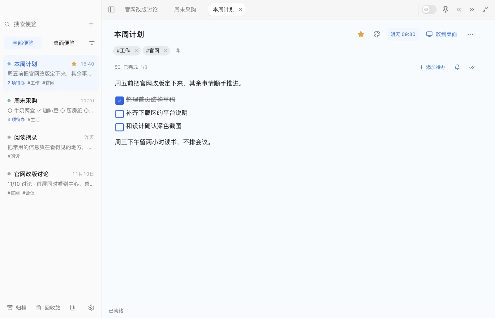
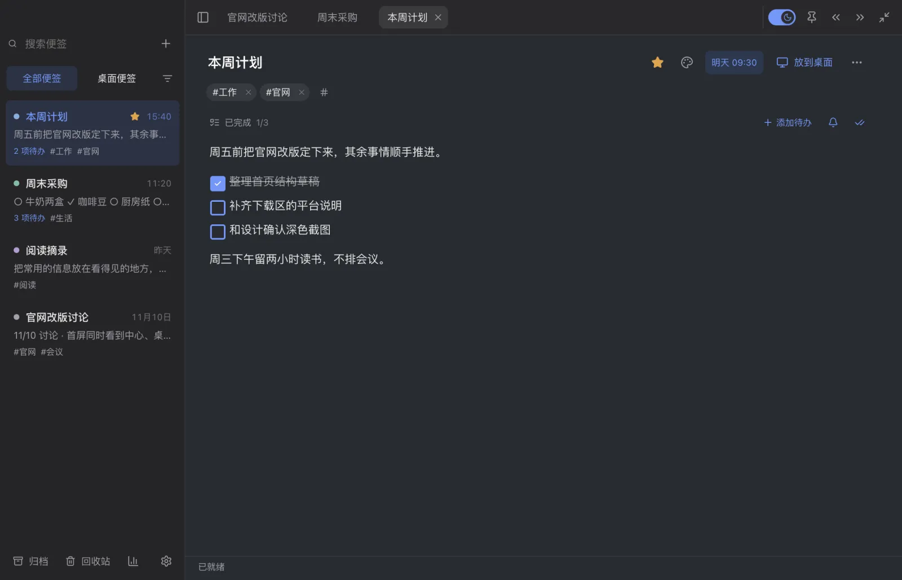
桌面便签标题栏只有颜色圆点、标题、置顶、收起和更多。置顶开启时按钮是蓝色实心。点颜色圆点换色，也可以用系统取色器自定义。
下载 PinNote
安装包发布在 GitHub Release。
或者用 Homebrew 安装：
brew install --cask zhong0118/tap/pinnotemacOS 安装包使用 ad-hoc 签名，没有做 Apple 公证，第一次打开时系统会拦一下，处理方法见 常见问题。
需要系统带有 WebView2（Windows 10 和 11 一般已经自带）。
常见问题
便签会同步到其他电脑吗？
不会。PinNote 不做云同步，便签只保存在当前电脑。想在另一台电脑上用，可以导出 Markdown，或在退出应用后复制整个数据目录。
数据存在哪里？
在系统的应用数据目录里，macOS 是 ~/Library/Application Support/com.pinnote.app，Windows 是 %APPDATA%\com.pinnote.app。在「设置 → 数据与更新 → 数据目录」可以直接打开。
怎么导出和恢复？
「设置 → 数据与更新」里可以导出全部便签为 Markdown 文件，也可以立即备份，或从最近 14 份自动备份中选一份恢复。单张便签的旧内容在更多菜单的「历史版本」里。
提醒什么时候会响？
PinNote 需要在后台运行（关掉中心后它还在托盘里）。后台每 15 秒检查一次到期提醒，到点发系统通知；打开便签、延后 10 分钟、清除提醒在便签中心里操作。完全退出期间到期的提醒，会在下次启动时补发一次。系统通知权限或勿扰模式可能让通知不显示。
MCP 默认开着吗？
没有。本地 MCP 默认关闭；在「设置 → 集成」启用后，默认只读，只能读普通便签。追加、修改、归档、设置提醒等操作需要你再打开「允许 agent 修改便签」。服务只监听本机 127.0.0.1。
macOS 提示无法验证开发者，怎么办？
PinNote 的 macOS 安装包使用 ad-hoc 签名，没有经过 Apple 公证，所以第一次打开时系统会阻止。打开「系统设置 → 隐私与安全性」，在下方找到 PinNote，点「仍要打开」。不同 macOS 版本的提示文字略有差别。
共享屏幕时能把便签藏起来吗？
可以在「设置 → 窗口与便签」打开「共享屏幕时隐藏」，PinNote 会请求系统不要把它的窗口放进截图、录屏和屏幕共享。Windows 上可靠；macOS 上取决于录制软件，基于 ScreenCaptureKit 的较新工具仍可能录到，开会前最好先试一次。
怎么更新？
在托盘菜单选「检查更新」，会下载新版并校验签名，先保存便签再安装重启。应用也会每 24 小时自动检查一次。